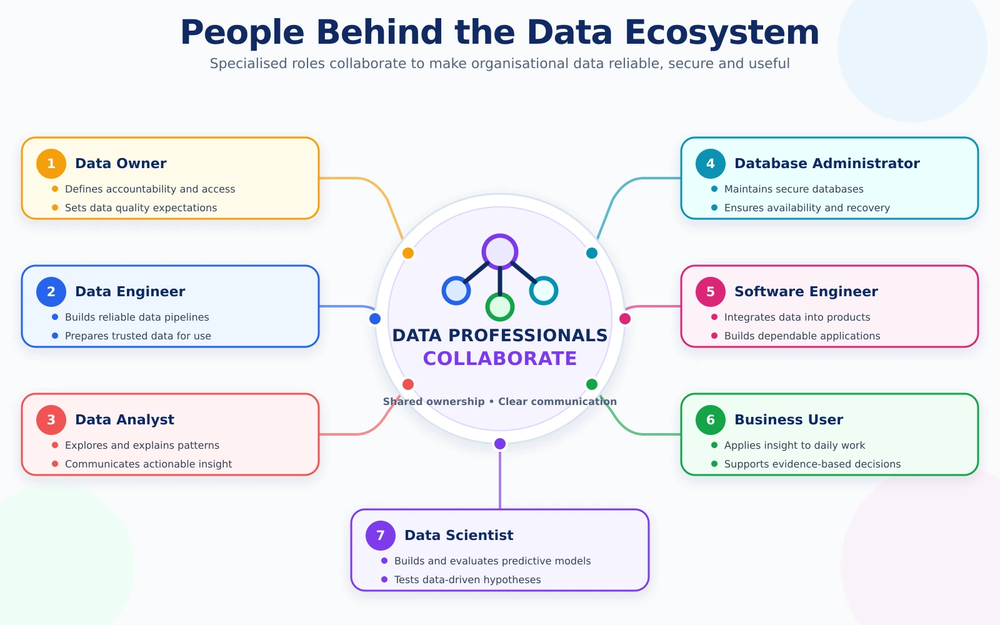

Who does what?
Each role has a different focus, but dependable data requires them to work together.

| Role | Primary responsibility |
|---|---|
| Data Engineer | Prepares and delivers reliable data for organisational use. |
| Data Analyst | Examines data and communicates findings. |
| Data Scientist | Explores patterns and develops predictive solutions. |
| Database Administrator | Manages database availability, performance and access. |
| Software Engineer | Develops applications that generate or use data. |
| Data Owner | Determines responsibility, access and appropriate use. |
| Business User | Uses information to perform work and support decisions. |
A useful analogy
- The data engineer prepares dependable routes for information.
- The data analyst uses available information to answer questions.
- The data scientist uses it to explore patterns and possible outcomes.
- The software engineer builds applications that produce or consume it.
- The data owner establishes how it should be managed and used.